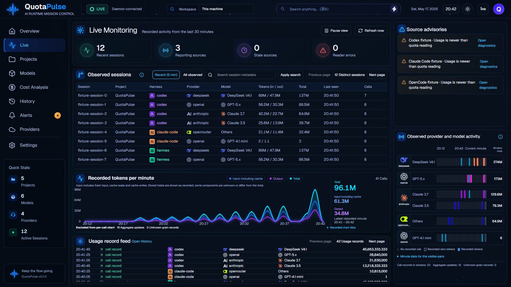
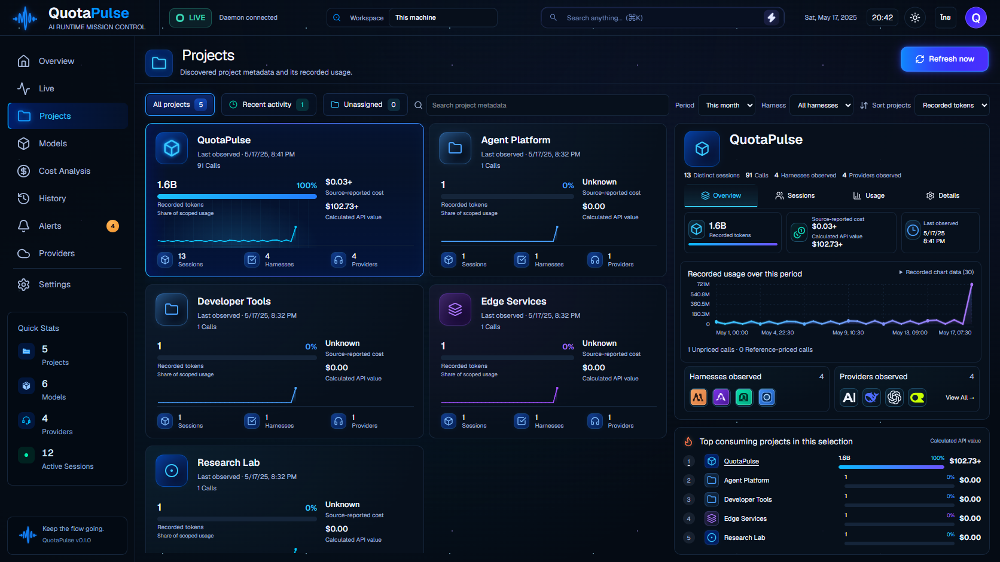
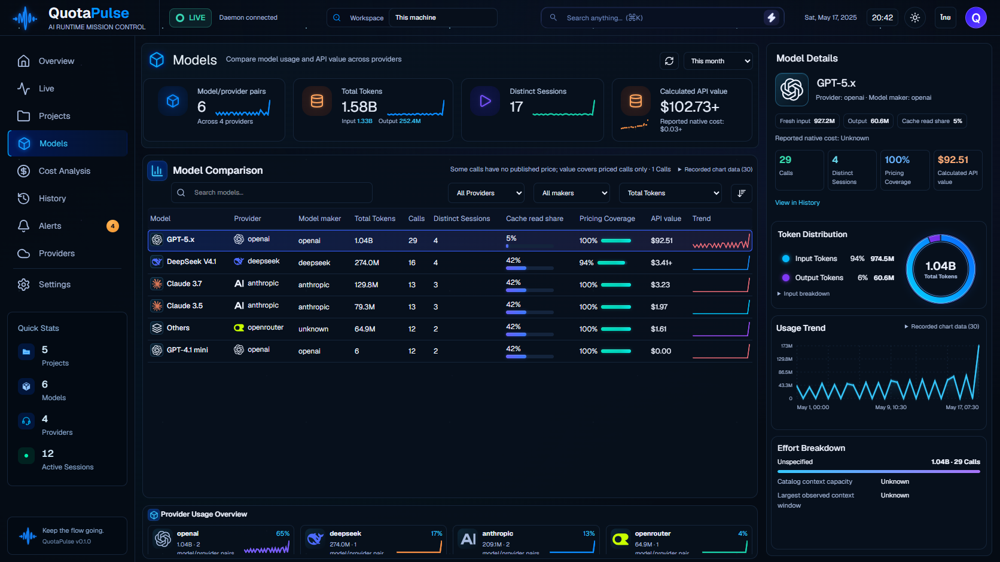
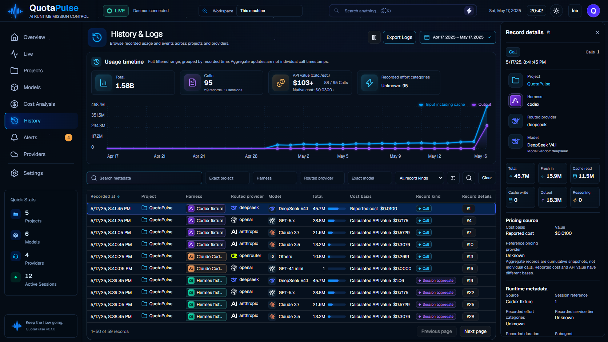
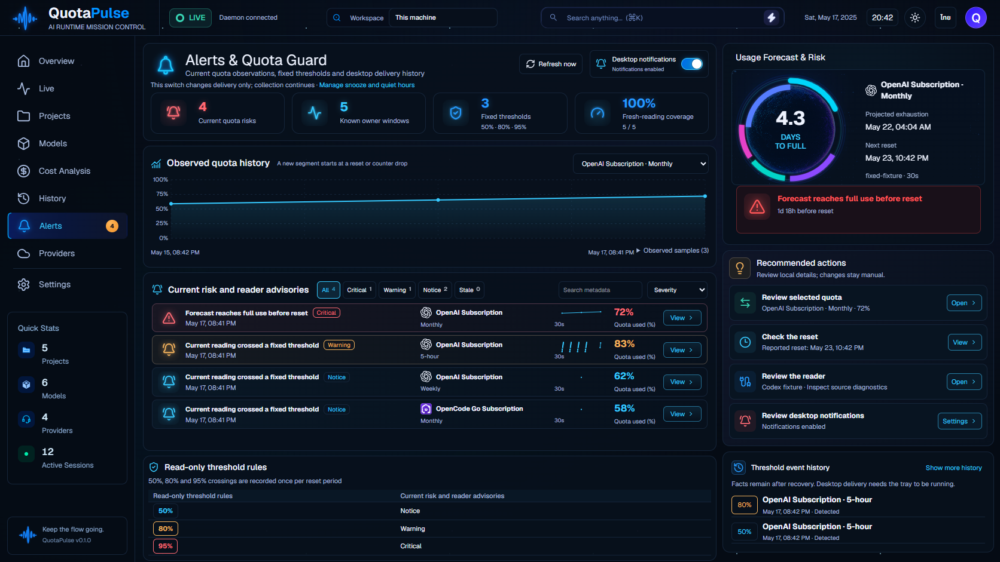
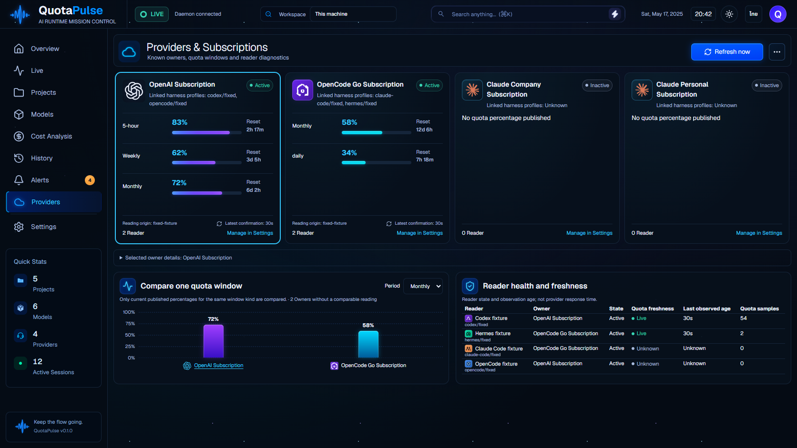

Overview


ด้านซ้ายคือภาพอ้างอิง ด้านขวาคือแอปจาก build เดียวกันโดยใช้ข้อมูลจำลอง กราฟและตัวเลขจึงต่างจากภาพตัวอย่าง คลิกภาพเพื่อดูขนาดต้นฉบับ ชุดนี้ยังไม่ใช่การรับรองความเหมือนทั้งหมด
ดูขอบเขตและผลตรวจ · ดูการปรับกราฟ History ก่อนและหลัง












